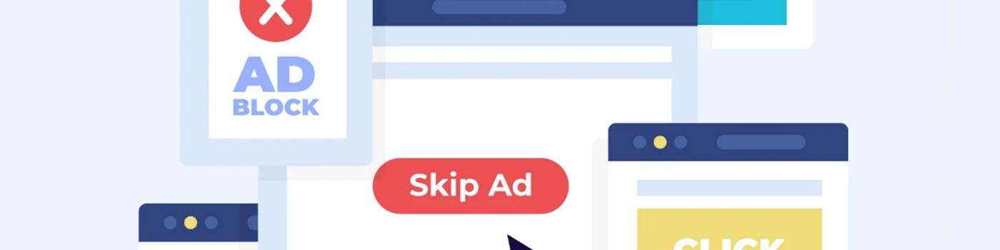

2025年屏蔽YouTube廣告的6種合法有效方法
我從 2015 年開始使用 YouTube，它承載著我的許多美好回憶。然而，廣告越來越頻繁，嚴重影響了我的觀看體驗。為了解決這個問題，我嘗試了各種屏蔽廣告的方法，並整理了這篇文章。
接下來，我將分享六種我認為最有效的方法：從瀏覽器擴展程序、修改 YouTube 應用到訂閱 YouTube Premium，甚至使用 VPN。希望這些方法能幫助你獲得更流暢、無廣告的觀看體驗。
2025 年 3 月 5 日，YouTube 推出了 Lite 功能，但仍有一些更實用、更合法的替代方案，讓你可以更安心地享受沒有廣告的 YouTube。
使用 YouTube Premium 屏蔽 YouTube 廣告
YouTube Premium 是官方無廣告訂閱服務，提供無廣告觀看、視頻下載、後台播放、訪問 YouTube Music Premium 和獨家原創內容。
2025年，YouTube Premium的訂閱費用為每月13.99美元，學生優惠價為每月7.99美元。新推出的YouTube Premium Lite售價為每月7.99美元。
毫無疑問，這是暢享 YouTube 且不被廣告打擾的最便捷方式，但價格可能仍會讓你猶豫。即使是更便宜的精簡版，整體性價比也並不高。
它缺少後台播放、離線下載和音樂服務等基本功能，與完整的高級版本相比，體驗明顯較差。

更便宜的 YouTube Premium 升級方式
鑒於官方價格高昂，我開始尋找更實惠的訂閱方案。嘗試了幾種方法後，我發現第三方帳戶共享平台是個不錯的選擇。它們比短期試用版更穩定，而且價格只是官方價格的一小部分。
例如，我一直在使用的 奈飛小鋪 提供的 YouTube Premium帳戶 ，每月費用不到 20 元 —— 比官方的精簡版便宜，但卻提供了完整的Premium體驗。久而久之，這為我節省了不少錢。
價格可能會隨時間略有波動，但始終低於官方價格，讓我在流媒體播放上節省了一大筆錢。使用兩年來，我從未遇到過任何不穩定的情況，他們的客服也一直快速可靠。

使用 AdBlock 屏蔽 YouTube 廣告
除了官方的高級服務外，使用廣告攔截擴展程序也是屏蔽 YouTube 廣告的另一個不錯的選擇。我個人使用 AdBlock，效果很好。
這些擴展程序在你的瀏覽器上運行，並自動過濾掉視頻中的大部分廣告，包括常見的前貼片廣告、中貼片廣告、後貼片廣告，甚至主頁推薦和側邊欄橫幅。
對於喜歡在電腦上觀看 YouTube 的用戶來說，這是一種快速簡便的刪除廣告的解決方案。
AdBlock 設置指南
除了 YouTube Premium 之外，AdBlock 是本文中最容易使用的方法之一。只需按照以下步驟即可快速屏蔽廣告：
- 打開你喜歡的瀏覽器(例如 Chrome、Edge 或 Firefox)。
- 前往瀏覽器的擴展商店並搜索AdBlock。
- 點擊"添加到瀏覽器"並完成安裝。
- 安裝後，刷新 YouTube 頁面，廣告將自動被屏蔽。
利弊分析
AdBlock 的優勢在於免費且易於安裝。它可以屏蔽幾乎所有常見的 YouTube 廣告，讓觀看體驗更加流暢，減少中斷。對於桌面用戶來說，它是移除廣告最直接有效的方法之一。
然而，它也存在一些缺點。它只能在瀏覽器上使用，對移動應用無效。此外，YouTube 會不斷更新其反廣告攔截機制，這可能會導致廣告攔截器停止工作。這需要定期調整或使用不同的擴展程序。某些網站也可能因廣告攔截器而出現加載問題，需要手動設置白名單。
提示：為什麼我的廣告沒有被 AdBlock 攔截？
即使安裝了 AdBlock，你仍然可能會在 YouTube 上看到廣告。以下是一些原因：
- AdBlock 未啟用： 如果仍然顯示廣告，請檢查擴展程序是否已啟用，並確保 YouTube 沒有被錯誤地添加到白名單中。
- 使用隱身模式： 在大多數瀏覽器中，隱身或私人模式通常默認禁用擴展，因此你需要手動啟用它。
- 過濾列表已過期： AdBlock 依賴於社區維護的過濾規則。如果規則未及時更新，某些新廣告可能無法被攔截。通常，刷新頁面或等待更新即可解決此問題。
總的來說，AdBlock 是一款功能強大且免費的廣告攔截工具。雖然 YouTube 更新反廣告攔截機制時，它偶爾會出現故障，但通常在過濾列表更新後就能快速恢復功能，因此仍然值得推薦。

使用 AdGuard 屏蔽 YouTube 廣告
AdGuard 是另一款廣告攔截應用，它不僅提供類似 AdBlock 的瀏覽器擴展程序，還提供桌面和移動應用程序。目前，AdGuard 支持 Windows、macOS、Android 和 iOS 系統，覆蓋電腦和移動用戶。與單純依賴瀏覽器插件相比，AdGuard 客戶端版本功能更強大，提供更廣泛的廣告攔截功能。
AdGuard 安裝方法
由於 AdGuard 同時提供瀏覽器擴展以及桌面和移動應用程序，因此以下是如何在每個平台上安裝它：
- 瀏覽器擴展：前往 Chrome、Firefox、Edge 或其他擴展商店，搜索"AdGuard"，然後將其添加到你的瀏覽器。
- 桌面應用程序：訪問 AdGuard 官方網站，下載 Windows 或 macOS 版本，安裝後即可在系統級別啟用廣告過濾。
- 移動應用程序：從 Android 或 iOS 應用商店下載 AdGuard 應用程序，安裝後，它將阻止應用程序和網站上的廣告。
通過這些安裝方法，AdGuard 幾乎覆蓋了所有主流平台，讓你無論使用電腦還是移動設備都能享受更清潔、無廣告的瀏覽體驗。
利弊分析
AdGuard 的優勢在於其覆蓋範圍廣。與主要攔截網頁廣告的 AdBlock 不同，AdGuard 還可以處理移動應用和桌面應用中的廣告，非常適合擁有多台設備的用戶，並提供更大的靈活性。
然而，與免費的 AdBlock 不同，AdGuard 的桌面和移動應用完整版需要付費訂閱(可選擇年度或終身許可證)，這意味著其成本更高。此外，由於 iOS 系統限制，需要進行額外配置，用戶體驗會略微複雜一些。
AdGuard 的訂閱等級可能有點令人困惑。如果你感興趣，可以訪問AdGuard 官方網站了解詳細的定價。
如果你覺得官方價格太高，你仍然可以選擇一些共享平台，在那裡你可以以低得多的價格獲得AdGuard Premium 。

使用 ReVanced 屏蔽 YouTube 廣告
使用經過修改的第三方 YouTube 應用來屏蔽廣告是另一個值得考慮的選擇。曾經很受歡迎的 YouTube Vanced 已經停止更新，但社區後來推出了 ReVanced 作為其繼任者來繼續維護。
ReVanced 基於官方 YouTube 客戶端，功能幾乎相同，但去除了廣告，並增加了後台播放和視頻下載等附加功能。對於 Android 用戶來說，它是一個受歡迎的替代方案。
ReVanced 安裝指南
與 AdBlock 和 AdGuard 的安裝過程相比，ReVanced 稍微複雜一些，需要進行一些手動設置。安裝方法如下：
- 前往ReVanced 官方社區或受信任的鏡像站點下載必要的文件(包括 ReVanced Manager)。
- 在你的 Android 設備上，啟用"允許從未知來源安裝"。
- 使用 ReVanced Manager 修補原始 YouTube 應用並創建 ReVanced 版本。
- 安裝後，使用你的 Google 帳戶登錄即可開始使用該應用程序。
ReVanced 提供了與 YouTube Premium 類似的完整體驗，但其安裝步驟更為複雜，因此更適合習慣進行一些調整的 Android 用戶。
利弊分析
ReVanced 的優勢在於它提供了與 YouTube Premium 非常相似的體驗：無廣告播放、後台播放、離線緩存、主題自定義等等，而且全部免費。對於 Android 用戶來說，它本質上是 YouTube Premium 的"免費替代品"。
然而，由於 ReVanced 並非官方應用，因此存在安全性和穩定性風險。請務必從可信來源下載，以免受到惡意軟件的侵害。此外，它主要支持 Android 系統，因此不適用於 iOS 設備。

使用 Pi-hole 屏蔽 YouTube 廣告
Pi-hole 是一款完全開源且免費的廣告攔截工具，其工作原理是通過本地 DNS 服務器在網絡級別攔截廣告域名。任何連接到同一網絡的設備都可以從中受益。由於是開源的，它不僅免費使用，而且還支持自定義，讓你可以根據自己的需求定製過濾規則。
然而，部署 Pi-hole 需要一些技術知識以及額外的硬件或服務器支持，因此是一個較為複雜的解決方案。它最適合具有強烈 DIY 意識並對網絡技術感興趣的用戶。
Pi-hole安裝指南
如果你對技術有深入的瞭解並對此方法感興趣，可以訪問Pi-hole 官方網站並按照他們提供的安裝腳本進行操作。你需要修改路由器或設備上的 DNS 設置才能使用 Pi-hole 的地址。連接後，它將阻止整個網絡中的大多數廣告請求。
利弊分析
Pi-hole 的優勢在於，一旦部署，它就能覆蓋整個網絡，非常適合希望家中所有設備都能享受廣告攔截功能的用戶。它不僅可以提升觀看體驗，還能增強隱私保護。
然而，在 YouTube 上，廣告和視頻通常共享同一個域名，因此屏蔽效果有限，無法保證完全無廣告的體驗。此外，與其他方法相比，安裝和維護需要更高的技術技能、額外的硬件以及更高的成本和複雜性。

使用 VPN 屏蔽 YouTube 廣告
屏蔽 YouTube 廣告的另一種方法是使用 VPN。一些 VPN 提供商提供廣告攔截功能，可以在數據到達你的設備之前過濾掉廣告請求，同時加密你的流量。
與 Pi-hole 需要用戶部署和維護網絡級解決方案不同，VPN 廣告攔截通常由服務提供商提供。用戶只需訂閱 VPN 並啟用該功能，這使得它成為一個更簡單且技術要求更低的選擇。
VPN安裝指南
- 選擇包含廣告攔截功能的 VPN 服務(例如，NordVPN)。
- 下載並安裝相應的客戶端應用程序(支持Windows，macOS，Android，iOS等)。
- 註冊並購買訂閱，然後登錄你的帳戶。
- 在設置中啟用廣告攔截功能。
- 一旦連接到任何服務器，你就可以享受廣告過濾和匿名瀏覽。
優點和缺點
VPN 廣告攔截主要針對常規網絡廣告，只能減少 YouTube 上的某些橫幅廣告或外部推廣廣告。其對視頻內嵌廣告的效果有限。
此外，優質的VPN服務通常需要付費訂閱，長期使用成本相對較高，相比專業的廣告攔截工具，性價比並不算高。
2025年最有效的YouTube廣告攔截方法
我們探索了各種屏蔽 YouTube 廣告的方法，每種方法都有其優缺點。為了幫助你選擇最有效的方案，我們創建了下表：
| 方法 | 每月費用(大約) | 推薦評級 |
|---|---|---|
| 訂閱 YouTube Premium | 13.99 美元/月(精簡版 7.99 美元/月) | ⭐⭐⭐⭐ |
| 通過 奈飛小鋪 訂閱 YouTube Premium | 每月約 4 美元 | ⭐⭐⭐⭐⭐ |
| 使用 AdBlock | 自由的 | ⭐⭐⭐⭐ |
| 使用 AdGuard | 2.49 美元/月(個人，3 台設備) / 5.49 美元/月(家庭，9 台設備) | ⭐⭐⭐ |
| 使用 ReVanced | 免費(僅限安卓系統) | ⭐⭐⭐ |
| 使用 Pi-hole | 硬件+電力，約2-5美元/月 | ⭐⭐ |
| 使用 VPN | 高品質VPN 每月8-12美元 | ⭐⭐ |
結論
觀看 YouTube 視頻時，有幾種方法可以避免廣告 - AdBlock、ReVanced 和 AdGuard 等工具可以阻止幾乎所有類型的廣告，而 VPN 則有助於過濾展示廣告。
不過，如果你追求最佳的整体體驗，YouTube Premium 仍然是你的首選。通過共享平台購買，你可以以更實惠的價格享受所有服務。
常問問題
如何禁用 YouTube 上的個性化廣告？
你可以通過 Google 帳戶設置關閉個性化廣告。只需訪問 Google 廣告個性化頁面並關閉"廣告個性化"選項即可。但是，這並不能完全屏蔽所有廣告。為了獲得完全無廣告的體驗，你可以考慮訂閱 YouTube Premium 或使用瀏覽器擴展程序和廣告攔截應用。
如何在 Mac 上刪除 YouTube 廣告？
在 macOS 上，你可以通過在 Safari 設置中啟用 AdBlock Pro 或類似的視頻廣告攔截擴展程序來屏蔽 YouTube 廣告。如果你使用的是 iOS/iPadOS 15 或更高版本，你也可以在啟用廣告攔截功能的情況下通過 Safari 訪問 YouTube。對於 iOS/iPadOS 14 及更早版本，可能需要獨立的廣告攔截應用。
亞馬遜音樂比 Spotify 好嗎？
想要在 YouTube 上觀看無廣告內容，最直接的方法是訂閱 YouTube Premium，它可以在 YouTube 和 YouTube Kids 上提供無廣告的體驗。或者，你也可以使用一些免費的方法，例如廣告攔截器、VPN 或 YouTube ReVanced 和 NewPipe 等經過修改的應用程序，但這些方法可能存在一定的限制和風險。